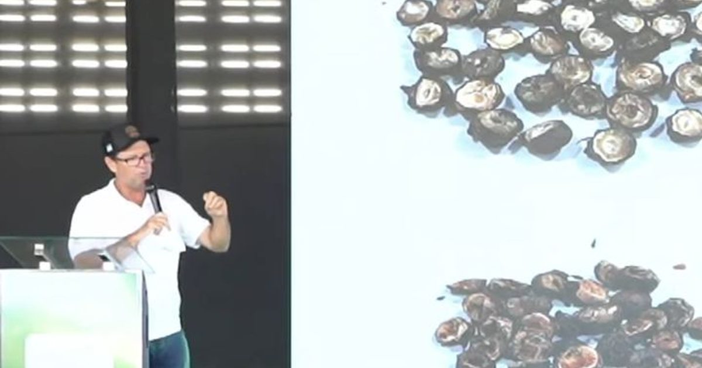

2º Fórum Nacional da Pimenta-do-reino · Jaguaré/ES · 5/11/2026
Secagem de pimenta-do-reino e café: qualidade e eficiência
Pedro Sacconi, produtor e exportador · 5/11/2026, 15h26 · 16 min

Fala integral · Full transcript
Resumo, gráficos e transcrição completa (PT/EN) no caderno do Fórum.